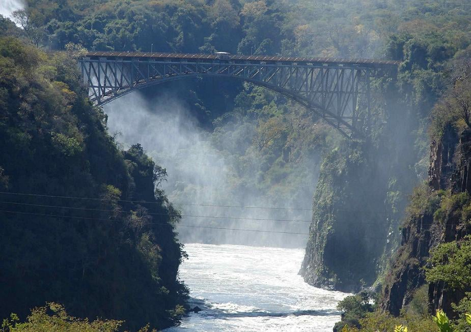

Hello, my name is Evidence Shonhiwa Matenda. I'm from Harare, Zimbabwe. I enjoy listening to music. I'm a BYU student currently studying Software Development.
The Victoria Falls Bridge Zimbabwe

The Victoria Falls Bridge crosses the Zambezi River just below the Victoria Falls and is built over the Second Gorge of the falls. As the river forms the border between Zimbabwe and Zambia, the bridge links the two countries and has border posts on the approaches to both ends, at the towns of Victoria Falls, Zimbabwe, and Livingstone, Zambia..